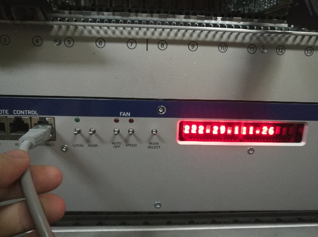
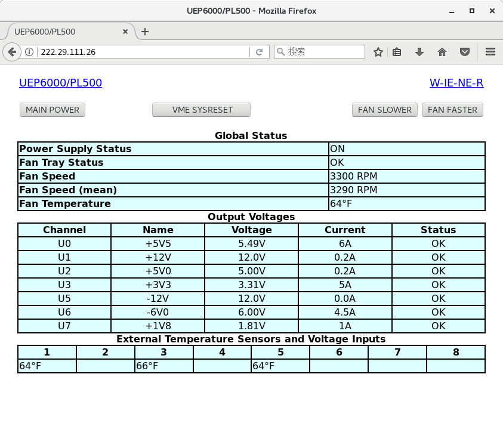

Crate¶
remote control¶
Connect the chassis network port with the network cable as shown in the figure above, and then the screen on the right side will quickly flash over the assigned IP. For example,the IP here is 222.29.111.26. If users don’t see the IP clearly, the network cable can be pulled out and reconnected.

As shown in the figure above, users can enter the control page by typing IP in the browser and it is shown that the chassis is off in the figure.

The button MAIN POWER is used to control the opening and closing of the chassis. The login box above will pop up when you click it for the first time.
Type the username “private”, and the default password is “private”.
After the chassis is open，the monitoring parameters is shown in the figure above.
Wherein, the buttons in the upper right corner FAN SLOWER and FAN FASTER are used to regulate the speed of the fan.
slot¶
There are 14 slots in the chassis, and the Numbers 1-14 are marked on the bottom, in which slot 1 is for the controller slot and slots 2-14 are for the acquisition modules.